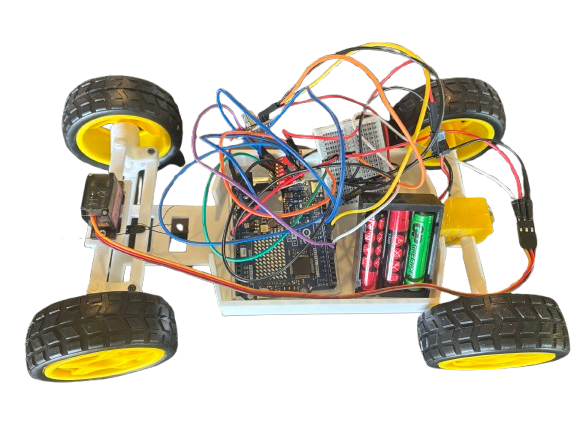

Project Overview
SimpleCar is one of my first robotics projects. It is a small and simple car prototype designed to experiment with basic movement, steering, 3D-printed parts, and wireless control.
Since this was an early project, the design is intentionally simple. The main goal was to understand how to combine mechanical components, electronics, and software into a working mobile robot.
Image

Prototype Description
The car uses a 3D-printed chassis that holds the main mechanical and electronic components. For traction, it uses a DC motor with a gearbox, while steering is controlled by an SG90S servo motor.
The microcontroller is an Arduino UNO WiFi. Thanks to its Wi-Fi functionality, the car can be controlled wirelessly from a phone. The Arduino creates or uses a Wi-Fi connection, and the user can connect to it with a smartphone to send movement commands to the vehicle.
Main Components
- 3D-printed chassis
- Arduino UNO WiFi
- DC motor with gearbox for traction
- SG90S servo motor for steering
- Wi-Fi based remote control from smartphone
Control System
SimpleCar is controlled through the Wi-Fi capabilities of the Arduino UNO WiFi. By connecting a smartphone to the Arduino's Wi-Fi network, the user can control the car remotely without using a physical remote controller.
This setup allowed me to test a basic wireless control architecture and understand how a mobile robot can receive commands from an external device in real time.
What I Learned
Through this project, I learned the basics of integrating a 3D-printed mechanical structure with motors, steering control, and a microcontroller. It was a simple but important first step toward more advanced robotics projects.